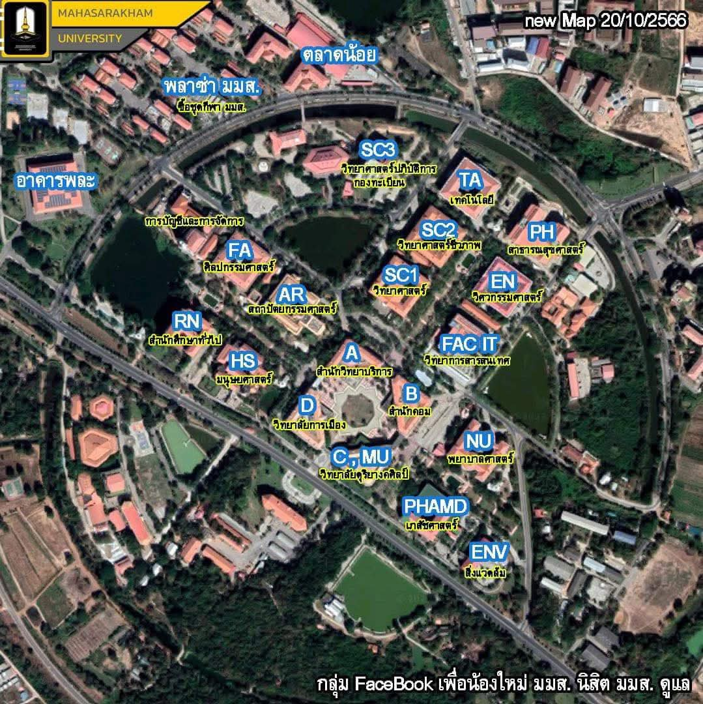

Mahasarakham University
แผนผังอาคาร มหาวิทยาลัยมหาสารคาม
เขตพื้นที่ขามเรียง — แตะที่ชื่ออาคารบนแผนที่เพื่อดูรายละเอียด
ลองแตะที่ป้าย
FAC IT
บนแผนที่ด้านล่างดูสิ 👇

ตำแหน่งป้ายอ้างอิงจากภาพแผนที่จริง ปรับตำแหน่งได้ในไฟล์ index.html